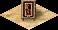

Vacant Lot

A Vacant Lot is an empty residential plot — the seed from which all housing grows. It is placed with the Housing button on the control panel and costs nothing to lay down; you are simply marking ground as open for settlement.
As soon as a vacant lot has road access, immigrants walk in from the map edge and the plot becomes a Crude Hut — the first housing tier. From there it evolves automatically as services reach it. An empty lot that never gains road access stays vacant forever.
Overview
Every city begins with empty land. The Vacant Lot is how you tell the game where citizens may live: it reserves a tile for residential use without committing any money or specifying a house type. The plot itself is just bare ground with a low fence — it produces nothing, employs no one, and sits at the very bottom of the housing chain.
The Vacant Lot is not a distinct building so much as the unoccupied state of a house. Internally it is the first housing tier (the Crude Hut) before anyone has moved in. Once immigrants arrive it stops being "vacant" and the normal housing evolution rules take over.
Mechanics
Becoming occupied
A vacant lot becomes occupied the moment it has road access within two tiles and the city has room for more population. Immigrants enter from the kingdom road entry point at the edge of the map, walk to the nearest open plot, and turn it into a Crude Hut. If immigration is stalled — because a population cap is in force, the city has no road link to the entry point, or sentiment is too low — vacant lots simply stay empty.
Placing lots
The Housing tool is draggable: click and drag to mark a whole block of vacant lots at once. Lots can only be placed on clear, buildable land — not on water, rock, or floodplain during inundation. Lay roads first, then fill the gaps with housing so that every plot is within two tiles of a road.
Desirability
An empty plot contributes nothing positive to its surroundings, and a sprawl of unoccupied lots is a sign that something is blocking immigration. Once occupied and evolving, houses begin to raise local desirability as they climb the tiers. Keep an eye on lots that refuse to fill — they almost always indicate a missing road link or a service gap nearby.
Tips
- Lay your road grid before placing housing, then drag vacant lots into the gaps — every plot must be within two tiles of a road to attract immigrants.
- If vacant lots are not filling, check three things in order: is there a road path to the map's kingdom entry point, is a population cap in force this mission, and is city sentiment high enough for immigration?
- Leave a little space between housing blocks for the services (wells, bazaars, temples, entertainment) that the houses will need to evolve — overcrowding lots with no room for civic buildings stalls growth at the lowest tiers.
- Demolishing an occupied house returns it to clear land, not to a vacant lot; you re-place housing with the Housing tool as normal.
Developer reference
All paths relative to the repository root.
Type & build menu
The Vacant Lot is not a separate building type — it is an alias for the lowest housing tier. In src/building/building_type.h:
constexpr e_building_type BUILDING_HOUSE_VACANT_LOT = BUILDING_HOUSE_CRUDE_HUT;It is exposed through the Housing build menu in src/scripts/building_menu.js:
{
id: BUILDING_MENU_VACANT_HOUSE,
items[BUILDING_HOUSE_VACANT_LOT]
}The sidebar's Housing button (src/scripts/ui_sidebar_window.js) opens this menu via window_build_menu_build_house() → BUILDING_MENU_VACANT_HOUSE.
House behaviour — src/building/building_house.* / house.js
Occupancy and evolution are handled by src/building/building_house.cpp / building_house.h. The "vacant" state is queried in script through src/scripts/building/house.js:
House.property.is_vacant_lot = { get: function() { return this.__is_vacant_lot() } }A lot is "vacant" while it is the Crude Hut tier with zero population; immigration sets population > 0, after which the standard housing evolution checks (food, water, goods, services, desirability) drive upgrades and downgrades. See the Housing developer reference for the full tier model.